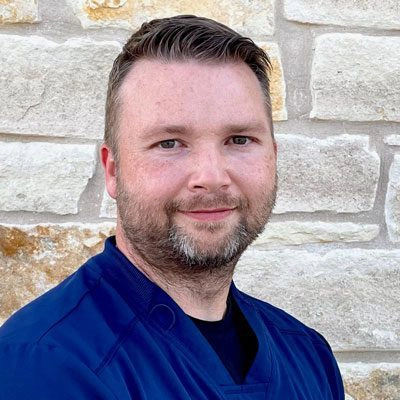
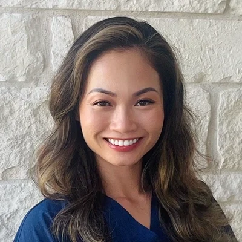
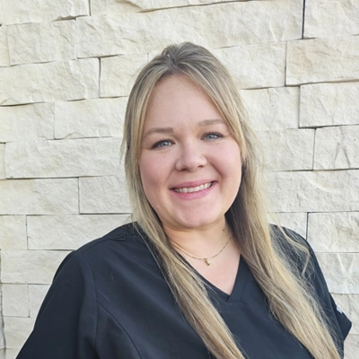
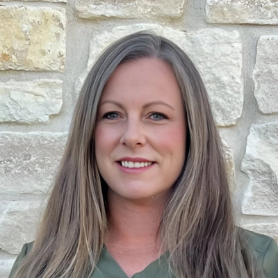
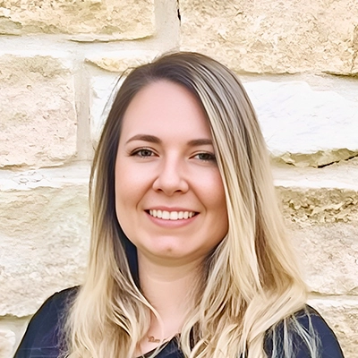
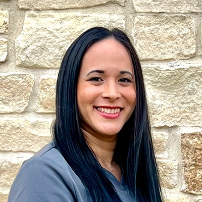
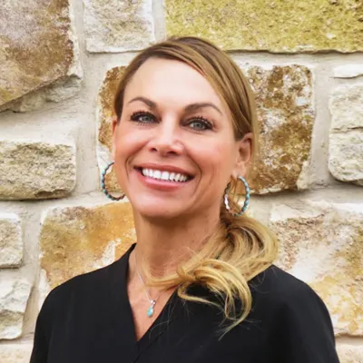
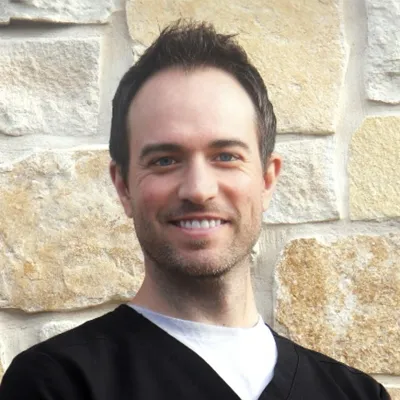

Meet the nurse practitioners & physician assistants
Names, titles, photos and bios as they appear on anthonychiro.com/us-nurse-practitioners/.

Adam Jester, FNP - APRN
LOCATION: TEMPLE
Adam Jester obtained his Bachelor degree in nursing at the University of Louisiana at Monroe in 2008. He later obtained a Masters degree in nursing as a family nurse practitioner from Grambling State University in 2013.
As a nurse practitioner he has 8 years of primary care experience including 4 years of family medicine and 4 years of pediatric medicine.
He has a passion for helping people improve their health so they can focus on the things that make them happy. He enjoys spending time with his wife and son including going to parks, bike riding, and watching movies. His hobbies include weight lifting and collecting silver age spider-man comics.

An Huynh, APRN, FNP-C
LOCATION: WEST GEORGETOWN
An Huynh is a dedicated Family Nurse Practitioner with a passion for providing quality healthcare and a drive to make a positive impact on the lives of patients and their families. She obtained her Bachelor of Science in Nursing from UT Health Science Center in San Antonio.
After 8 years of working as an inpatient rehabilitation and acute care nurse, she became a Family Nurse Practitioner and received her Master of Nursing from UT Health Science Center in Houston.
In An’s free time, she enjoys exploring the world through traveling, finding joy in discovering new cultures and cuisines. In addition to her love for food, An is also an avid boxing and fitness enthusiast. An can also be found spending quality time with family, friends, and her beloved German Shepherd dog named Lulu.

Marci Schwartz, MEd, MSN, APRN-FNP-C
LOCATION: WACO
In 2004, Marci graduated from Tarleton State University with a bachelor's degree in Exercise Sports Sciences and a master's degree in Education. Prior to becoming a nurse, she spent eight years working as an athletic trainer.
After graduating from Texas Tech University Health Sciences Center in 2012 with a Bachelor of Science in Nursing, Marci received her Master of Science in Nursing specializing in family nursing in 2017.
Throughout her career, Marci has acquired extensive knowledge in the fields of physical medicine and pain management. Using that knowledge, she helps control or minimize the pain of her patients. Her passion is educating patients about the mechanics of their bodies so they can live a life free from limitations.
Her hobbies include golfing, traveling, and spending time with her husband, children, and pets.

Paul Hodnett, NP-C
LOCATION: WACO
Paul Hodnett NP-C graduated from Texas A&M University with a Bachelor's of Science in Nursing in August 2020. With experience in Telemetry/Cardiology, he returned to school and graduated from Texas A&M Commerce with a Master's of Science in Nursing focusing on Family Nurse Practitioner in August, 2022.
Paul and his family moved from College Station, Texas, to Waco, Texas in May, 2023. With his wife and four children, Paul enjoys camping, hunting, and fishing. In addition to providing care to both our English and Spanish speaking communities, Paul is also a bilingual provider! Hablo Español!

Natalie DeMasters, MSN, APRN, FNP-C
LOCATION: NORTH WACO
Natalie DeMasters is a board-certified Family Nurse Practitioner with a passion for holistic, patient-centered care. She began her nursing career by earning her RN license from McLennan Community College in May 2019, followed by her Bachelor of Science in Nursing from Texas Tech University in 2020.
She recently completed her Master of Science in Nursing with a specialization in Family Practice at the University of Texas at Arlington in May 2025.
With over six years of experience in diverse nursing specialties across the Waco community, Natalie brings a well-rounded clinical background and a deep commitment to integrative care. Her professional interests include musculoskeletal health, pain management, and preventive care. She takes pride in combining evidence-based medical practices with the principles of chiropractic and natural healing to support the whole person, not just their symptoms.
Natalie believes in the power of listening, educating, and empowering her patients to take an active role in their health. Whether she’s managing chronic conditions, supporting recovery from injury, or promoting long-term wellness, her goal is always to help patients achieve balance, healing, and a higher quality of life through collaborative care.
A native of Hamilton, TX, Natalie has called McLennan County home since 2012. Outside of work, she enjoys swimming, reading, and keeping up with her energetic son, Huck, and their two dogs.
She looks forward to meeting you and being part of your health journey!

Andrea “Cristi” Flynn, APRN, FNP-C
LOCATION: KILLEEN
Andrea “Cristi” Flynn, APRN, FNP-C is a board-certified Family Nurse Practitioner and U.S. Army veteran with over two decades of experience in nursing and healthcare leadership.
She earned her Bachelor of Science in Nursing from the University of Louisville in 2003 before commissioning into the U.S. Army Nurse Corps, where she served honorably as an operating room nurse in both overseas and domestic assignments.
Following her military service, Cristi continued her work in perioperative care and labor and delivery, cultivating a strong passion for patient education. In 2019, she completed her Master of Science in Nursing and Family Nurse Practitioner program, later dedicating her practice to veterans' healthcare.
Cristi and her active-duty husband settled in Central Texas in 2017 with their two daughters. Together, they run a small horse farm in Belton, focusing on the conservation and responsible breeding of endangered Irish Draught horses for dressage, jumping, and vaulting. Deeply committed to community engagement and sharing her passion for the sport, Cristi teaches equestrian riding and vaulting lessons and regularly coaches her team at competitions. She integrates her holistic approach to wellness into her teaching, helping students develop strength, confidence, and balance both in and out of the saddle. She also enjoys traveling and making memories with her husband and daughters.

Angela Krego, FNP-C
LOCATION: GEORGETOWN
Angela Krego is a board-certified Family Nurse Practitioner with a strong background in critical care and interventional cardiology. She earned her Bachelor of Science in Nursing from California State University Channel Islands in 2015 and spent ten years as a Registered Nurse, gaining extensive experience in high-acuity settings.
In 2024, she returned to CSU Channel Islands to complete her Master’s degree in Family Medicine, further expanding her ability to provide comprehensive, patient-centered care.
With a passion for functional medicine, Angela relocated to Texas in early 2025, where she continues to help patients live healthier, more balanced lives through a personalized approach to wellness.
Outside the clinic, Angela is a proud dog mom to two lovable pups, an avid Disneyland enthusiast, and enjoys traveling frequently to spend time with her family on both coasts of the U.S.

Brittany Wilson, MSN, APRN, FNP-C
LOCATIONS: ROUND ROCK
Brittany Wilson, MSN, APRN, FNP-C, is a board-certified Family Nurse Practitioner dedicated to delivering comprehensive, patient-centered care that enhances health, mobility, and overall well-being.
With over 15 years of healthcare experience, she has worked in diverse clinical settings, allowing her to evaluate, diagnose, and treat a wide range of acute and chronic conditions with an emphasis on prevention and long-term health.
At Anthony Medical & Chiropractic Center, Brittany collaborates with medical and chiropractic teams to provide coordinated, evidence-based care tailored to each patient. She focuses on listening, patient education, and developing personalized treatment plans that promote healing, restore function, and improve quality of life.
Known for her compassionate approach and attention to detail, Brittany is committed to ensuring every patient feels heard, respected, and supported.
When she’s not caring for patients, Brittany enjoys dancing, spending time with her family, and relaxing with her two dogs.

Sara Williamson, APRN, FNP-C
LOCATION: WEST GEORGETOWN
Sara Williamson, APRN, FNP-C graduated from Medcenter One College of Nursing in Bismarck, ND with a Bachelors of Nursing Science degree and began her nursing career as a commissioned officer in the United States Air Force. As a member of the Texas Air National Guard for 6 years and on active duty for 8 years, she proudly served her country.
As a Family Nurse Practitioner, she obtained her Master of Science in Nursing from Texas A&M University in 2016.
Sara is extremely passionate about wellness and longevity. All of her patients receive compassionate, comprehensive, and holistic care from her. In addition to spending quality time with her two sons, her family and friends, she enjoys seeking out new adventures, traveling the world (preferably to mountains or beaches), and experiencing new things.

Jordan Harborth, FNP-C
LOCATION: TAYLOR
Jordan Harborth FNP-C earned his Bachelor of Science in Nursing from Texas State University in May 2012 and his Master of Science in Nursing from Texas State University in May 2015. As a specialist in Parkinson's disease for more than nine years, Jordan has experience in emergency room medicine and neurology.
Jordan is passionate about the health and well-being of his patients. Health goals are unique to each patient. He strives to meet and exceed the expectations of every patient.
In October 2020, Jordan and his family moved to Taylor, TX. Besides golfing and watching sports, he likes to hang out with his wife and two daughters, Hattie and Haylie.

MAJ (Ret.) James S. Lorenz, MPAS, PA-C
LOCATION: KILLEEN
MAJ (Ret.) James Lorenz is a board-certified Physician Assistant with over two decades of dedicated service in both military and medical settings. He earned his Bachelor’s degree in Physician Assistant Studies from Midwestern University in 2006 and went on to complete his Master’s degree in Physician Assistant Studies at the University of Nebraska in 2010.
James proudly served in the United States Army for 23 years, retiring in 2022 with the rank of Major. His military career shaped his clinical expertise, leadership, and commitment to providing patient-centered, high-quality care in diverse and often challenging environments.
Today, James brings that same level of dedication and discipline to his civilian practice. He is passionate about improving patients' health through evidence-based medicine, compassionate care, and a strong provider-patient relationship.
Outside of work, James enjoys spending time outdoors fishing and hiking, as well as staying active through weight lifting. He values balance in life and strives to model the healthy lifestyle he encourages in his patients.
Call for an appointment
(254) 410-688811 locations across Central Texas. Free insurance verification. Se Habla Español.